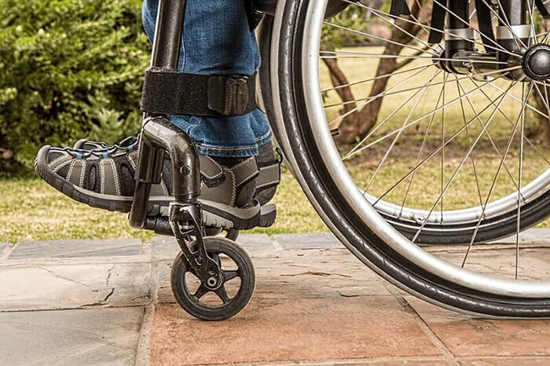
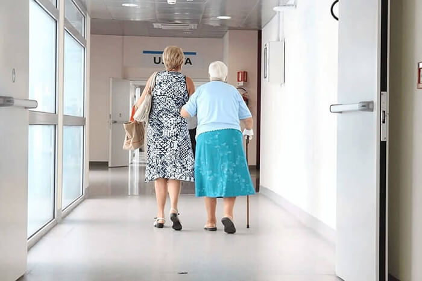

Începutul povestirii a fost banal, bărbatul a ignorat problemele articulare. El explica mobilitatea limitată și durerea cu oboseala. De-a lungul timpului, disconfortul s-a intensificat, iar Marin Ştefănescu s-a adresat unui specialist. Timp de 3 ani, patologia doar s-a dezvoltat, simptomele au devenit din ce în ce mai vizibile. Cursurile de terapie au fost ineficiente, astfel încât bărbatul nu mai putea merge în mod normal.
Acum, Marin Ştefănescu, în vârstă de 47 de ani, se află într-un scaun cu rotile. Și, în cele din urmă, bărbatul a apelat la talk-show-ul "Salvatorii". La program sunt invitați specialiști de frunte, care salvează viețile oamenilor. La emisiunea de astăzi, se petrece, de asemenea, un miracol, recomandările experților în menținerea sănătății articulațiilor și remediul natural salvează personajul principal.

Picioarele lui Marin nu se puteau mișca și el simțea o durere pulsantă în articulația genunchiului. Parcă i-au împușcat genunchiul.
Atenție: la sfârșitul acestui articol, veți afla despre un produs natural care susține sănătatea articulațiilor și ajută să oprească dezvoltarea tulburărilor musculo-scheletice. Îl puteți cumpăra numai online de la distribuitor! Acum, produsul are o reducere de 50%. Produsul este disponibil în cantități limitate!
Personajele principale ale talk-show-ului american "Salvatorii" se încadrează în situații dificile, suferă de probleme de sănătate, în plus, ridică noi subiecte la transmisie. Marin Ştefănescu s-a rușinat de el însuși și nu a vrut să ceară ajutor, dar soția lui a insistat, așa că au apelat împreună la editorul spectacolului. Femeia nu putea să vadă cum suferă și își pierde treptat puterea soţul său.
Un an a suferit de durere insuportabilă, în special în extremitățile inferioare. Genunchii și gleznele s-au umflat și a avut dureri pulsante.
Bărbatul este sigur că are articulații inflamate și că sunt procese distructive în corpul său. Până în prezent, nici un specialist nu l-a ajutat, diagnosticând în mod constant diverse probleme, familia lui este disperată.
Cum se poate distruge persoana sănătoasă pe sine însuşi?
În studio "Salvatorii", s-au adunat specialiști de frunte care se ocupă de problemele articulațiilor, precum și oameni care au scăpat de problemele sistemului musculo-scheletic. Marin Ştefănescu a venit la studio într-un scaun cu rotile, cu o lună în urmă încă putea merge, în ciuda faptului că la fiecare pas simțea o durere ascuțită.
Statisticile sunt înfricoșătoare: 70% din populația lumii suferă de articulații bolnave. Este necesar să se ia măsuri preventive; această problemă nu înconjoară nici tinerii, nici persoanele în vârstă.
Prezentatorul a cerut personajul principal să spună cum a observat problema și cum se dezvolta. Marin a spus următoarele: "Bănuiesc că problemele mele articulare au apărut când aveam 30 de ani. Chiar și atunci, în timpul zilei la puțin efort fizic, genunchii mi se umflau și picioarele mă dureau foarte mult înainte de ploaie. Când aveam 42 de ani, m-am trezit în mijlocul nopții de durere insuportabilă și arsură în articulații. Uimitor, dar durerea a dispărut dimineața, iar ziua mă deranja rareori.
Timp de 5 ani am apelat la diferiți specialiști, am trecut zeci de programe terapeutice. Am primit următorul diagnostic:
- guta;
- artrita;
- uzura articulațiilor.
Încă nu știu de ce sufăr.
Au apărut tot mai multe şi mai multe simptome, simțeam o durere insuportabilă în articulații pe tot corpul, mai ales noaptea. Înainte de a mă aşeza în scaun cu rotile, ridicându-mă pe scări, genunchii mă dureau în mod constant. Specialistul a explicat acest lucru cu osteoartrita. Excesul de greutate a agravat și mai mult problema. Zi la zi după odihnă, stenoza articulară creștea. Degetele mele au devenit mai groase și mai ferme, iar abilitățile motorii fine funcţionau cu încălcări. Am devenit mai puțin mobil și mult mai slab.
Acum iau analgezice puternice și cer ajutor. Cred că această regresie poate fi prevenită".
Experții spun despre cauzele problemei. Toată lumea face parte din grupul de risc!
Experții talk-show-ului "Salvatorii" din aspectul lui Marin au înțeles de ce are schimbări progresive. În primul rând, el are exces de greutate, în al doilea rând, articulațiile au necesitat mișcări, dar bărbatul era într-un scaun cu rotile.
Eric Schmidt, specialist în probleme articulare, a vorbit despre cauzele principale ale problemei și a încercat să-și dea seama ce viață a condus personajul principal înainte de vârsta de 40 de ani: "Marin, înțelegem cu toții disperarea dvs., încercăm să vă ajutăm. În timpul practicii mele de 25 de ani, m-am confruntat cu diferite ocazii. Mulți nu au înțeles de ce au probleme articulare, dar cred că stilul de viață contează. Statisticile arată că doar la 15% dintre oameni se poate vorbi despre încălcări ereditare, în toate celelalte cazuri problema este dobândită. Marin, cu ce v-aţi ocupat în tinerețe, ce aţi mâncat, aţi avut oare obiceiuri proaste?"
Marin a răspuns specialistului: "Când eram tânăr, viața mea era furtunoasă, dar când am împlinit 25 de ani, am încetat să mai beau alcool. Mi-am întâlnit soția și am decis să conduc un stil de viață sănătos. Am mers la sala de sport timp de aproximativ 10 ani, nu am consumat alcool, cu excepția băuturilor alcoolice de înaltă calitate la diferite sărbători. După un timp, în loc de antrenamente regulate, am început să alerg dimineața și apoi am încetat să mai fac sport.
Am muncit din greu de la vârsta de 38 de ani și munca mea a fost o sarcină constantă pentru picioarele mele, chiar am redus activitatea fizică. Am lucrat la computer, îndeplineam lucru monoton și aproape că nu mă ocupam de execiţii fizice. Așa am câștigat excesul de greutate, chiar am început să mănânc mult înainte de culcare. Atunci consumam alcool rar și nu aveam obiceiuri proaste."
Eric Schmidt este, fără îndoială, un adevărat profesionist.
Experții au discutat despre ceea ce a auzit, Eric Schmidt, a explicat care ar putea fi cauzele problemelor de sănătate: "Sănătatea lui s-a înrăutățit din cauza stilului său de viață. Mulți factori pot duce la dezvoltarea proceselor articulare patologice. Sarcina constantă la picioare și lipsa mișcării pot afecta negativ sănătatea, este necesară activitatea fizică. Excesul de greutate a agravat din ce în ce mai mult situația. Sper că mergea la muncă în pantofi confortabili. În caz contrar, picioarele lui sunt deformate. Există mulți factori care pot duce la dezvoltarea problemelor articulare. Cele mai frecvente și cele mai periculoase probleme sunt următoarele:
- Suprasolicitarea picioarelor, în special în cazul excesului de greutate.
- Munca îndelungată care trebuie făcută în picioare.
- Traumele articulațiilor și ligamentelor, inclusiv microtraumele permanente.
- Tulburările metabolice asociate cu depunerea de săruri în cavitatea cartilajului articular.
- Modificări legate de vârstă: uzura cartilajului.
- Predispoziție ereditară și malformații congenitale.
- Operația de îndepărtare a ligamentelor și meniscului.
- Bolile inflamatorii cronice prelungite ale articulațiilor.
- Bolile răspândite ale țesutului conjunctiv.
- Artroza piciorului cu deformare poate fi cauzată de încălțăminte incomodă.
Stilul de viață sănătos, îmbrăcămintea confortabilă și încălțămintea sunt foarte importante pentru a preveni dezvoltarea unui mediu care provoacă inflamații și deformări ale articulațiilor. Din păcate, la început, aceste recomandări sunt de obicei ignorate."
Final fericit
După o altă conversație lungă, specialistul român a vorbit despre propria experiență în rezolvarea problemelor articulare. Lucica Popa a împărtășit următoarele informații: „Înainte de apariția acestui remediu unic, oamenii care veneau la mine pentru ajutor luau o mulțime de produse farmaceutice. Acest lucru provoca efecte secundare, starea se stabiliza doar temporar și durerea se oprea, la fel, temporar.
Datorită apariției , situația s-a îmbunătățit. Acest produs unic bazat pe plante afectează moale, dar foarte eficient și rapid starea țesutului cartilaginos.
este disponibil în monodoze, iar ingredientele sale active funcționează astfel:
- promovează stimularea circulației sângelui, sinteza oaselor și a cartilajului în articulație;
- ajută la prevenirea depunerilor de sare, la formarea nodurilor inflamatorii;
- contribuie la efectul dezinfectant general;
- ajută la întărirea sistemului imunitar.
Cel mai important, că în practica mea, sute de oameni au revenit la viața normală și au scăpat de durerile articulare".

După cursul , chiar și persoanele cu vârsta cuprinsă între 70 și 80 de ani își pot restabili mobilitatea.
La talk-show-ul "Salvatorii" a participat un bărbat care a apelat anterior la Lucica Popa. Povestea lui a fost foarte asemănătoare cu povestea personajului principal, dar a avut noroc, pentru că a apelat la un adevărat specialist. A urmat cursul și, de asemenea, făcea kinetoterapie în fiecare zi, mergea la masaj. Toate acestea au dat un rezultat pozitiv. Astăzi, oaspetele emisiunii este atent la dieta sa, se plimbă câte 2 ore pe zi și doarme mult. Spune că se simte mai bine decât în tinerețe.
Puterea uimitoare a ingredientelor naturale
nu are analogi - toți specialiștii care au participat la emisiune au fost de acord cu această afirmație. Doar unul dintre ei a auzit despre acest produs pentru prima dată. funcționează perfect în combinație cu metode cunoscute sau ca un instrument preventiv eficient independent. Toate componentele monodozei afectează problema.
Eric Schmidt a spus ce componente conține și ce efecte au asupra corpului: "Am vizitat personal fabrica și am vorbit cu persoana care a brevetat compoziția și chiar a primit permisiunea de a-l vinde. El este un profesionist, știe totul despre extracte, ierburi și alte substanțe naturale. conține următoarele componente:
- Sulfat de glucozamină. Ajută la refacerea structurii cartilajului articular.
- Sulfat de condroitină. Ajută la îmbunătățirea metabolismului calciului-fosforului în țesutul cartilaginos.
- Metilsulfonilmetan. Are efect antiinflamator.
- Extract de crețușcă. Este utilizat în caz de reumatism.
- Vitamina C. Ajută la activarea sintezei colagenului (coenzima necesară pentru reacția de sinteză a colagenului).
- Acid hialuronic. Acesta face parte din lichidul sinovial al cartilajului.
- Mangan. O componentă a glucozaminei (a cărei lipsă poate duce la inflamarea articulațiilor).
Păcat că acest remediu nu a devenit încă disponibil pentru societate. Farmaciile refuză să coopereze cu distribuitorul, deoarece cred că nu merită... Este bine că profesioniștii de frunte ştiu despre și știu că este eficient. Facem tot posibilul pentru ca oamenii să nu sufere de dureri articulare și să trăiască o viață împlinită."
La sfârșitul discursului său, Eric Schmidt a spus unde poate fi cumpărat .
Din păcate, nu este un produs disponibil în mod liber. Norocoşi cei care au privit emisiunea. Pe de altă parte, ei au, de asemenea, avantajul că nu vor obține un fals. Produsul original poate fi achiziționat pe site-ul oficial al producătorului și este adesea disponibil la o reducere.
După emisiune și după efectuarea analizelor, personajul principal a primit recomandările experților. Producătorul l-a asigurat cu produsul său. A trecut doar o lună, dar Marin Ştefănescu a fost în picioare. Extrem de recunoscător tuturor participanților la talk-show, el speră că miracolul se va întâmpla și el va putea merge din nou. Experții cred că aceasta este posibil. Este pur și simplu surprinzător faptul că produsele naturale acționează mai bine decât cele chimice!
ATENŢIE: Acum este disponibil la o reducere de 50%. Astfel, distribuitorul oferă acces la produs pentru cât mai mulți oameni posibil. Pentru a obține mărfurile la promoție, până la (inclusiv) completați formularul de cerere de pe site-ul oficial. - farmaciile au refuzat să vândă produsul din cauza prețului său scăzut. Feriți-vă de falsuri, original poate fi achiziționat numai pe site-ul oficial.
Comandaţi